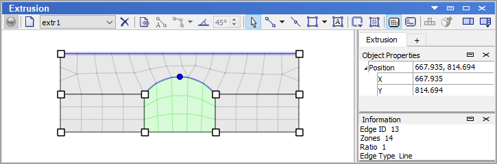

视图
挤出集通过两个步骤创建：1）定义要挤出的二维形状；2）确定挤出的方向和范围。“挤出”窗格提供两种不同的视图来执行这些步骤：构建视图和挤出视图。
构建视图
使用工具栏上的构建视图按钮（ ）即可访问构建视图。该视图用于绘制将要进行网格划分和挤出的二维形状。该形状由排列成闭合多边形的节点和边构成。单连通的 3 边或 4 边形多边形（称为规则块体）可以用结构化网格或非结构化网格划分；所有其他类型的多边形（称为不规则块体）只能用非结构化网格划分。每个块体中网格的分辨率由边界边离散为分段（或网格单元）的方式决定。
这些操作在此仅作简要描述，详见构建视图中的操作（Operations in the Construction View）一节。
）即可访问构建视图。该视图用于绘制将要进行网格划分和挤出的二维形状。该形状由排列成闭合多边形的节点和边构成。单连通的 3 边或 4 边形多边形（称为规则块体）可以用结构化网格或非结构化网格划分；所有其他类型的多边形（称为不规则块体）只能用非结构化网格划分。每个块体中网格的分辨率由边界边离散为分段（或网格单元）的方式决定。
这些操作在此仅作简要描述，详见构建视图中的操作（Operations in the Construction View）一节。


图 1：“挤出”窗格的构建视图
挤出视图
按下工具栏上的挤出视图按钮（ ）即可访问挤出视图。该视图用于定义挤出的范围、网格划分、方向与方位。一旦定义了这些方面，并且构建视图中的操作也已完成，即可通过按下工具栏上的挤出按钮（）将挤出集转换为网格单元。如果挤出集（构建视图）仅包含带结构化网格的块体，用户可以使用“创建块体构建…”工具按钮（
）即可访问挤出视图。该视图用于定义挤出的范围、网格划分、方向与方位。一旦定义了这些方面，并且构建视图中的操作也已完成，即可通过按下工具栏上的挤出按钮（）将挤出集转换为网格单元。如果挤出集（构建视图）仅包含带结构化网格的块体，用户可以使用“创建块体构建…”工具按钮（ ）将挤出结果发送到“块体构建”窗格，以便在创建网格单元之前对模型进行三维修改。
此处简要描述的操作在挤出视图中的操作（Operations in the Extrusion View）一节中有完整说明。
）将挤出结果发送到“块体构建”窗格，以便在创建网格单元之前对模型进行三维修改。
此处简要描述的操作在挤出视图中的操作（Operations in the Extrusion View）一节中有完整说明。

| 这些内容对您有帮助吗？… | FLAC3D © 2019, Itasca | 原文更新于 2020 年 10 月 8 日 |